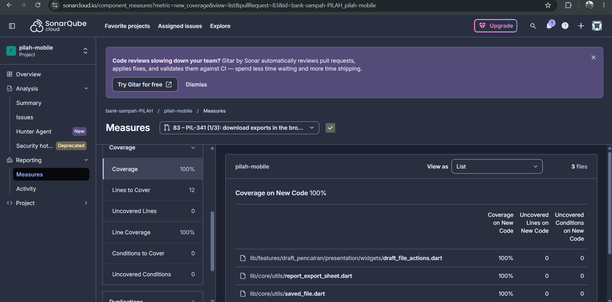
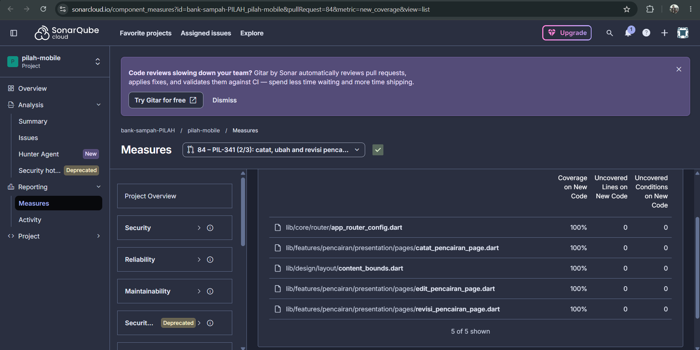

Test Driven Development¶
Competency level: 4
Level 3 met: PIL-331 was built test-first on both sides, with [RED]/[GREEN]/[REFACTOR] in every commit subject. Every review finding Tristan raised was fixed the same way, with a failing test first. Changed lines are 100% covered in every MR, generated code included, and each behaviour is tested with positive, negative and corner cases.
Level 4: advanced testing methods in the commits:
- Mocks, stubs and fakes for isolation: mocktail,
Completers that decide which request answers first, and a fake backend at the HTTP boundary. - Mutation checks: tests that passed when written were proven to guard their code by breaking the code and watching them fail.
- Full-graph test: a test builds the app's whole generated dependency graph in both environments.
Coverage proof at a glance¶
Every MR this page claims, with SonarCloud's new-code coverage from the MR's last PR analysis and, where I ran it, the local diff-coverage report. The two tools count lines differently: SonarCloud counts executable lines, diff-cover counts changed lines in lcov.
| MR | Work | SonarCloud new-code coverage | Local diff coverage |
|---|---|---|---|
| pilah-be #92 | PIL-331 | 100% of 40 lines | 100% of 93 lines |
| pilah-be #96 | Filter allow-list (A03) | 100% of 15 lines | 100% of 28 lines |
| pilah-be #79 | PIL-304, after the review fixes | 100% of 144 lines | 100% of 459 lines |
| pilah-mobile #73 | PIL-331 | 96.5% of 142 lines: the 5 missing lines are generated di.config.dart, see below |
100% of 141 lines, generated code included |
| pilah-mobile #62 | PIL-304, after the review fixes | 100% of 120 lines | 100% of 122 lines |
| pilah-mobile #74 | Generated DI graph | 100% of 6 lines | — |
| pilah-mobile #83 | PIL-341 slice 1 (13 Oct) | 100% of 12 lines, screenshot | — |
| pilah-mobile #84 | PIL-341 slice 2 (13 Oct) | 100% of 102 lines, screenshot | — |
Backend: PIL-331, pilah-be #92, stacked on #79¶
| Behaviour | Red | Green |
|---|---|---|
GET /jenis-sampah/{id}/harga lists every version newest first, with price, unit, start and author |
1f43102 |
50d9392 |
Each version is marked terjadwal, berlaku, sebelumnya or digantikan (a corrected scheduled price) |
97a6632 |
601b948 |
Refactor after green: f0b6b0d replaces a re-scan with a flag and names the price unit once.
Pinned, then proven: 8bc2be8 covers three behaviours:
- another bank's pengurus (404) and a nasabah (403) can't read the history (A01);
- a jenis with no versions has an empty history;
- a backfilled version has no author.
They passed when written, because the endpoint reuses the viewset's scoping. So I broke each piece once (an unscoped lookup; dropping allow_null) and watched the tests fail before keeping them.
Coverage: 100% of the 93 changed lines (report), 469 tests.
Backend: review fixes in #79 (12 Oct)¶
| Behaviour | Red | Green |
|---|---|---|
| A reseeded setoran keeps the price of its own date, not today's | 857735b |
f67a84f |
- The red was real: the test recorded a price change taking effect now, reran the seed, and watched a 3,500 snapshot become 99,999.
- A covered refactor:
dc29a68routes the seed's price writes throughcatat_harga; the existing seed tests cover it. - Coverage: #79 after the fixes is 100% of 459 changed lines (report).
Mobile: PIL-331, pilah-mobile #73, stacked on #62¶
| Behaviour | Red | Green |
|---|---|---|
| The repository reads a jenis's versions with unit, start, author and status | c1088ee |
7077e55 |
RiwayatHargaCubit loads them, or reports why it couldn't |
345f853 |
35e908a |
| The screen shows each version's price, local start, author and status badge | a2a36ba |
cd41645 |
| A jenis with no versions shows an empty state | 4c9a443 |
328fe5c |
| A failed load says why and can be retried | 4544b2b |
6621a7d |
| Each harga card opens its history, not the edit sheet | e376a74 |
e4276fd |
/riwayat-harga without a jenis (a refreshed web tab) falls back to the list instead of crashing |
afb0795 |
097785a |
| Review, 12 Oct: a price with sen (3333.99) is shown exactly, not truncated | de18bfc |
4226ca5 |
| Review, 12 Oct: a history longer than one page is read to the end | 9ad13dd |
510f02a |
Refactor after green: 2eb1bea shares one date-and-time formatter with the pencairan revision page.
Caught by tests:
- Button overflow: at 360 dp the new button overflowed the card by 1.3 px. The existing phone-width test caught it, and the icon was dropped.
- Route crash leaking: a routing test showed that the route crashed without a jenis, and that the crash leaked into the next test through the shared router. That became its own red/green pair.
Coverage: 100% of the 141 changed lines (report), generated code included. With the generator's coverage marker dropped, the two registrations #73 adds to di.config.dart showed as missing (98%). eb9b20f (pushed 13 Oct, after the week's full run) builds RiwayatHargaCubit through the real graph and covers them.
Mobile: review fixes in #62 (12 Oct)¶
| Behaviour | Red | Green |
|---|---|---|
| When only the price fails after the fields saved, the sheet says so and stays open | 5a80375 |
f1ea8d9 |
| An older list reload that answers late can't overwrite a newer one | ece524b |
bd21f70 |
Coverage: #62 after the fixes is 100% of 122 changed lines (report), generated code included through 726df68 (13 Oct).
Mobile: the generated DI graph, pilah-mobile #74¶
SonarCloud showed #62 and #73 a few lines short of 100%. Every missing line was a registration in the generated di.config.dart, which the generator marks coverage:ignore-file. Covering it for real turned up a bug: CI-built apps could not build AuthenticationBloc, because the generated graph asked dependency injection for a bool.
- The crash:
af350f0[RED]reproduced it, and320612b[GREEN]fixed it.staginglater got the same fix from Tristan's #71, so #74 now takesstaging's version. - The whole graph:
06ece1baddsdi_graph_test, which builds every registration in dev and prod. A second test fails if a new registration is missing from its list. - Coverage in CI:
941f24dand26fcf40make CI and SonarCloud measure the file instead of excluding it. Result: every executable line ofdi.config.dartis covered (221/221 on 12 Oct).
Mobile: PIL-341 slices 1 and 2 (13 Oct), #83 and #84¶
PIL-341 brings pencairan to the web dashboard. Slice 1 (#83) downloads exports in the browser. Slice 2 (#84, stacked on #83 and merged into it by Tristan on 15 Oct) records, edits and revises a pencairan on a desktop window.
| Behaviour | Red | Green |
|---|---|---|
| No "Bagikan" (share) after a browser download, for a draft export and for a report | 36379b5, 298e864 |
a1d37de, 7433830 |
| An export downloads through the browser on web, tested in real Chrome. The red was shown failing in CI before the implementation | 1b8b299, f11b44b |
824f7de |
| The edit and revision routes, opened without their pencairan (after a refresh), go back to the laporan instead of crashing | 13e8268 |
151154c |
| Catat Pencairan puts the saldo and the button in a side panel on desktop | 128d0e5 |
19c1d2b |
| Edit Pencairan and its revision history stay in a readable column on desktop | b13b0e1 |
426a8ad |
| A recorded payout is confirmed in a centred dialog on desktop | a221974 |
700d123 |
| The success dialog clips its content to its rounded corners. The bug was caught by the Playwright screenshot run, not by the widget tests | 05f0d3e |
b6c5efb |
Refactors: bf60b97 put the native file saver behind a platform-neutral entry point before slice 1 began, and 0d0866a settled where that entry point lives.
Coverage: SonarCloud shows 100% of new code on both (12 lines on #83, 102 on #84) and no open issue. One file is left out of SonarCloud's coverage on purpose: file_downloader_web.dart (48cac00). flutter test --coverage runs on the Dart VM, which can't compile browser-only package:web code, so every line would count as uncovered. The file is covered instead by file_downloader_web_chrome.dart, which CI runs in Chrome. The app already handles its web-only Google sign-in button the same way.
PIL-341 on SonarCloud¶


Positive, negative and corner cases¶
| Behaviour | Positive | Negative | Corner |
|---|---|---|---|
| Price history (BE) | versions newest first, with status | another bank (404); a nasabah (403) | no versions at all; a backfilled version without an author; two versions on the same start (digantikan) |
| Price history (mobile) | rows with price, start, author, badge | failed load, retried | empty history; a status the app doesn't know (read as "sebelumnya"); a price with sen; more than 100 versions; a 360 dp phone; the route without a jenis |
| Saving a price change (#62) | — | the price POST fails after the PUT saved | an older reload answering last |
| Seed rerun (#79) | — | — | a price change made today must not reprice historical setoran |
| DI graph (#74) | every registration builds in dev and prod | a dependency the graph can't provide | a registration missing from the list |
Advanced testing methods¶
- Controlled ordering with
Completers (#62). The race test hands the cubit two pending requests, answers the newer one first and the older one last, and checks the newer price stays. - A fake backend at the HTTP boundary (#73).
StubApireplaces Dio's adapter, so the real data source, repository, use case and cubit run against canned responses. Failures are injected at the transport level (api.fail). - Mutation checks (#92, #73).
- For the three pinned backend tests, I broke the code they guard and watched each fail.
- For the unknown-status fallback (
5123002), I replaced the fallback with a hard lookup and watched the test fail.
- Full-graph resolution (#74).
di_graph_testbuilds every registration of the generated dependency graph. It's the test that would have caught the startup crash before a build shipped.